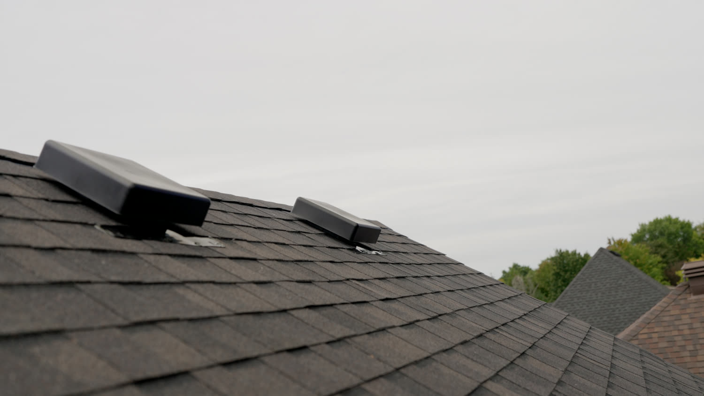

Safe, professional ice dam removal that clears the blockage without damaging the shingles underneath.
Ice dams are one of the most common winter roofing problems in Kitchener-Waterloo. Heat escaping from the attic melts snow sitting on the roof. That meltwater runs down and refreezes once it reaches the colder roof edge, building up a ridge of ice. Water continues to pool behind that ridge with nowhere to go — so it backs up under the shingles and into the house.
Climbing onto an icy roof is dangerous on its own, and tools like axes, chisels, or hammers can crack or dislodge shingles that were otherwise fine — turning a temporary ice problem into a permanent leak. Rock salt and calcium chloride can also damage shingles, gutters, and landscaping if used incorrectly.
Roof-safe ice dam removal methods that protect the roofing material underneath.
We clear ice dams using roof-friendly methods designed to remove the blockage without cracking shingles or damaging the roof surface, relieving the trapped water safely so it can drain as intended.
Proper attic ventilation and insulation stop the heat loss that causes ice dams in the first place. In problem areas, heat cable installation adds another layer of protection. Our Winter Prep Program covers both — a no-obligation, pre-season plan to keep ice dams from becoming a recurring problem every winter.

Icicles along the roof edge, visible ice ridges at the eaves, or water stains appearing on ceilings during winter thaws are all signs of an ice dam.
Yes, if left unaddressed. Trapped water can back up under shingles and damage decking, insulation, and interior drywall. Removing the ice dam and addressing its cause limits the damage.
DIY ice dam removal carries real risk of falls and of damaging shingles with improper tools like axes or chisels. Professional removal uses roof-safe methods that clear the ice without harming the roofing material underneath.
Proper attic ventilation and insulation stop the heat loss that causes ice dams in the first place. Heat cable installation is also effective in problem areas. Our Winter Prep Program covers both.
Repairs, replacements, flat roofing, emergency response, heat cables, and ice dam removal.
GuideStraight answers on leak signs, ice dams, repair vs. replacement, and roofing costs.
Get StartedTell us about your property and we'll follow up as quickly as possible.
Serving Kitchener, Waterloo, Cambridge, Elmira, Guelph, and surrounding areas.